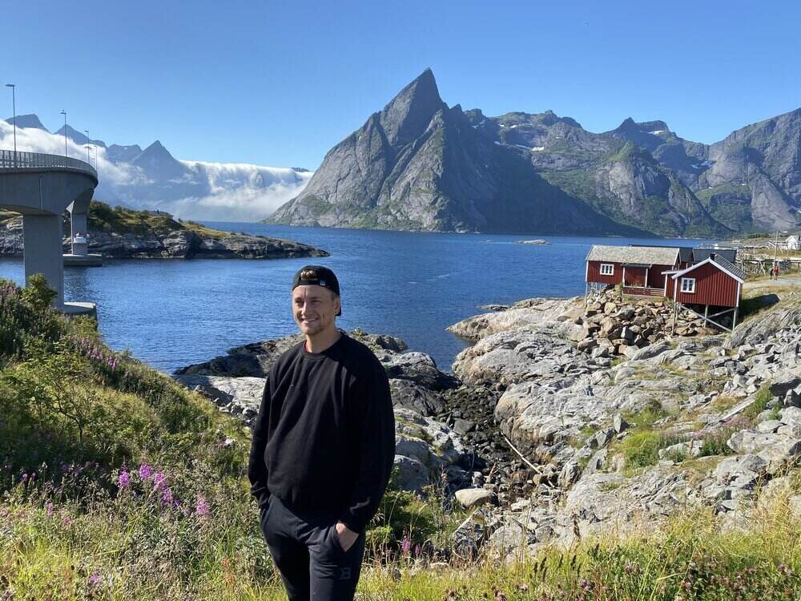
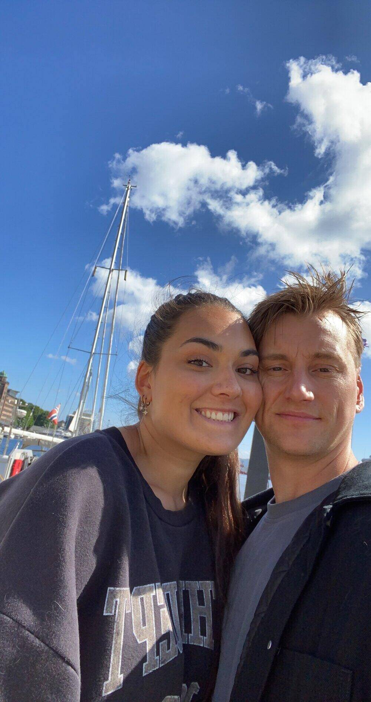
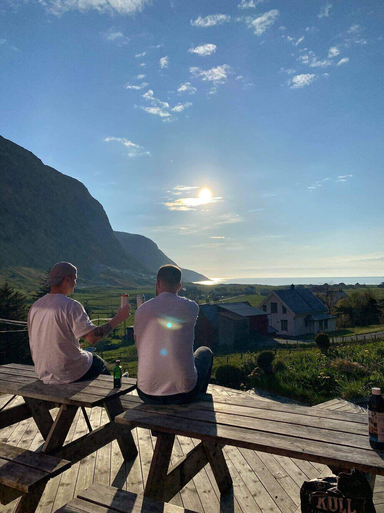
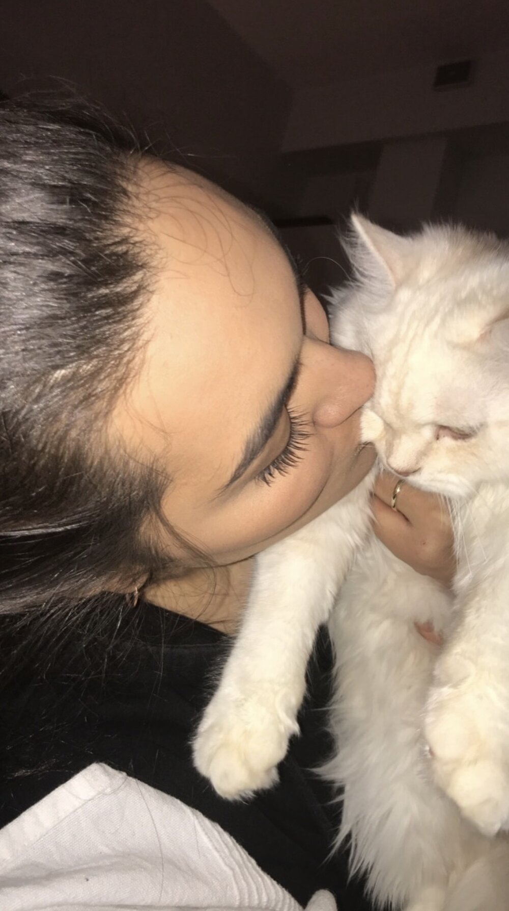

Welcome to my blog
Latest posts
My name is Preben Fjeldsbø, and I come from Bergen in Norway. When I was young, football was life and I trained and played all the time. Now I like to stay active with the gym and go jogging. Apart from this, I like to travel and see new places, play "Call of Duty" and watch football matches. I have to watch all Manchester United matches. They are the best! On the weekends I try to be social, be with friends and maybe go for a walk in the city. The reason I made this blog is because I have an exam at school. There we have been commissioned to create a blog. I have always been fascinated by cool and nice cars. That's why I want to create a blog about my dream cars.
In at nibh ut felis eleifend ullamcorper a sed enim. Curabitur eget imperdiet velit. Vestibulum egestas ullamcorper risus sit amet efficitur. Suspendisse tempor mollis nulla, a faucibus felis aliquet in. Nunc at nulla sit amet urna blandit pellentesque vel vehicula tellus. In feugiat, arcu eget accumsan vulputate, sem arcu tempus metus, nec interdum quam tellus ac nisl. Nunc ullamcorper vulputate leo. Maecenas elementum sem nec ligula feugiat, vel pretium augue vestibulum. Cras ex urna, egestas vel molestie sodales, blandit ut velit. Sed suscipit elit malesuada, malesuada dolor vel, blandit magna.
Nullam imperdiet est et leo euismod, in ornare turpis dignissim. Nulla a nunc risus. Vivamus et eros et sapien varius mollis et at odio. Phasellus mattis sed mi aliquet venenatis. Aliquam volutpat massa at libero sodales elementum. Ut ullamcorper consectetur leo, ac feugiat velit interdum a. Proin ut turpis erat. Nulla sagittis tortor a bibendum pharetra. Cras lobortis sodales vestibulum. Nulla vitae fermentum libero. Nunc eleifend orci gravida neque pellentesque fringilla. Morbi dapibus eleifend ligula, sed molestie massa porta ac.
Cras ac velit sodales, egestas augue ac, aliquet enim. In hac habitasse platea dictumst. Quisque sit amet tortor suscipit, malesuada lectus sit amet, vulputate velit. Quisque eget libero at metus aliquet condimentum sit amet et mi. Aliquam vitae bibendum eros. Sed iaculis eros nec justo tincidunt ullamcorper. Duis finibus, felis in porttitor interdum, purus ipsum molestie urna, eu feugiat mi felis eu diam. Donec ac nulla sed massa porta convallis. Donec tempus tellus a nunc vulputate, pulvinar interdum nibh aliquam. Etiam sollicitudin tortor augue, eget aliquet diam facilisis ut. Nullam ut ipsum in lectus tincidunt facilisis sed vel tortor.
In sed ligula dictum, dictum quam eget, placerat mi. Proin eget tristique ex. Aliquam id pretium magna. Aenean dictum est luctus tristique auctor. Ut porta consequat laoreet. Cras et elit sit amet odio fermentum auctor et id dui. Quisque id commodo metus. Aliquam suscipit tincidunt dapibus. Mauris sit amet mattis elit. Pellentesque sit amet ex lorem. Sed faucibus aliquet dolor quis iaculis. Duis tempor laoreet massa vitae pharetra. Fusce vulputate elementum ultricies. Phasellus convallis ut felis vel feugiat. Integer euismod metus libero, et elementum libero ullamcorper quis. Cras non augue sit amet augue mattis dictum.
